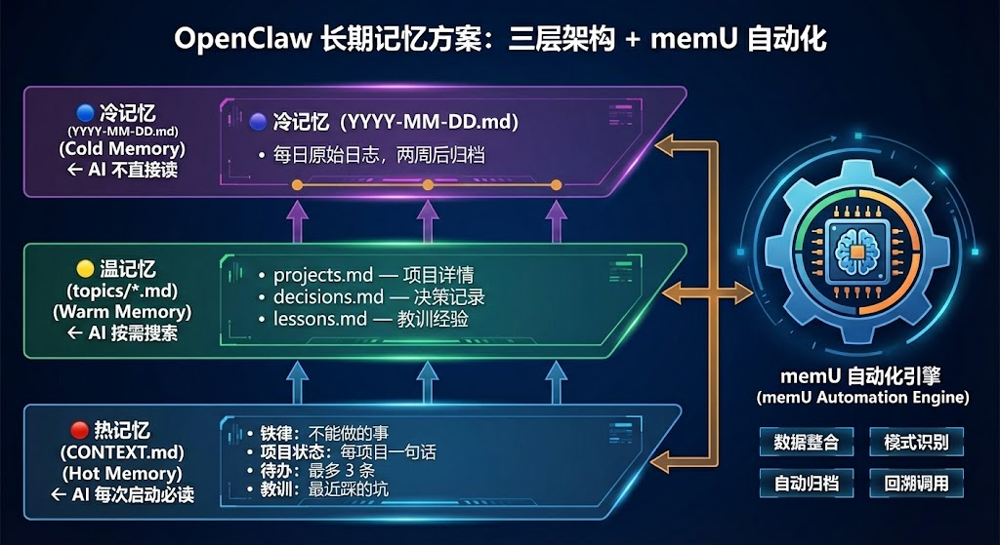
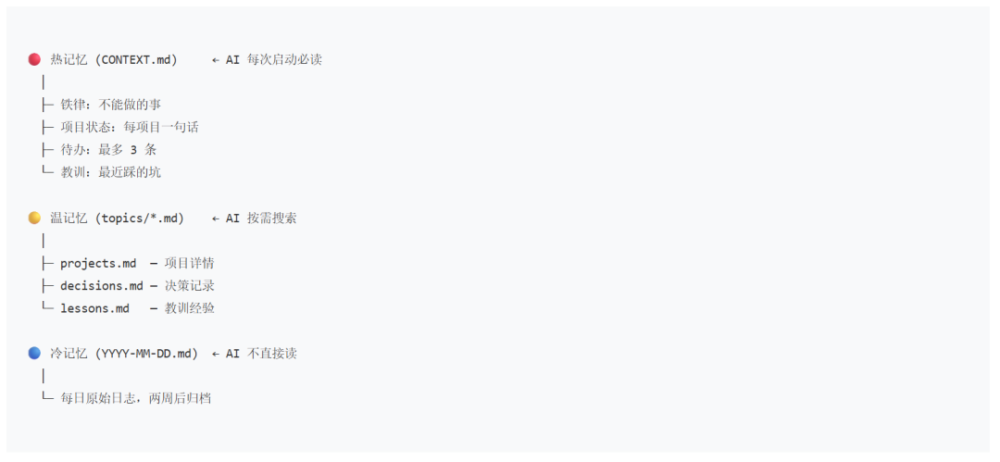

每次新开会话，它都"失忆"了。昨天的决策、项目状态、踩过的坑，统统记不住。对于一人公司同时跑多个项目的场景，每次对话都要花 10 分钟"同步上下文"，效率反而更低。
本文给出一个实用方案：三层记忆架构 + memU 自动化，解决 OpenClaw 的长期记忆问题。
一、OpenClaw 记忆痛点
1.1 对话隔离导致重复同步
OpenClaw 每个会话是独立的，跨会话记忆完全依赖外部文件系统。
问题：
新会话启动时，AI 不知道你在做什么项目、做到哪了 每次都要重复介绍背景、技术选型、决策理由 多项目并行时，AI 容易混淆不同项目的信息
1.2 手动维护记忆不可持续
一开始我尝试手动维护 MEMORY.md，但现实问题是：
人会忘：忙起来忘了更新
人会懒：觉得"下次再补"
人会累：每天要写大量笔记
两周没更新，记忆文件就跟现实脱节了。
1.3 记忆没有分层导致臃肿
把所有信息塞进一个文件，问题更严重：
文件越来越长，AI 读不完 重要信息被淹没在细节里 查找困难，关联缺失
二、三层记忆架构
借鉴人类大脑的记忆机制，设计了三层结构：

2.1 热记忆：CONTEXT.md
定位：AI 每次启动必读的"白板"
内容规范（≤100 行）：
## ⛔ 铁律
- 搜索只用 browser(profile=openclaw)
- 子任务禁止 openclaw gateway restart
## 📌 活跃项目状态
| 项目 | 状态 | 一句话 |
|------|------|--------|
| 项目A | 开发中 | 已完成API，前端进行中 |
| 项目B | 上线 | 监控正常，无bug |
## 📋 待办（≤3条）
1. 完成项目A的支付模块
2. 修复项目B的登录bug
## 🧠 教训
- 不要用 web_search（没有 API key）关键设计：
- 100 行硬上限
：逼自己只保留最重要的东西 - 结构化格式
：AI 读一遍就能理解 - 每次必读
：新会话启动自动加载
2.2 温记忆：topics/*.md
定位：按主题分类的"知识库"
文件结构：
memory/
├── topics/
│ ├── projects.md # 项目详情
│ ├── decisions.md # 重要决策和理由
│ ├── lessons.md # 教训和经验
│ └── cron-jobs.md # 定时任务配置AI 使用方式：
不每次都读（太长） 需要时用 memory_search 语义搜索 找到相关内容后再用 memory_get 读取具体段落
2.3 冷记忆：YYYY-MM-DD.md
定位：原始"档案库"
特点：
每天一个文件，记录当天发生的事 原始、粗糙、不做整理 两周后自动归档到 memory/archive/
AI 不直接读，只在定期整理时作为数据源。
三、memU 集成方案
手动维护不可持续，用 memU 实现自动化。
3.1 memU 是什么
memU（GitHub: NevaMind-AI/memU）是一个开源的 AI Agent 记忆管理框架。
核心能力：
从文本中自动提取原子化记忆 语义搜索（Embedding） 自动聚类和关联 心智理论分析（理解用户偏好）
3.2 集成架构
3.3 技术实现
环境配置
# 安装 memU
pip install memu-py
# 配置环境变量
export OPENAI_API_KEY="your-key" # 或其他兼容的 LLM
export MEMU_MEMORY_DIR="$HOME/.openclaw/workspace/memu_memory"CLI 工具封装
#!/usr/bin/env python3
import sys
sys.path.append('/home/ubuntu/.openclaw/workspace')
from memu import MemU
memu = MemU(
llm_api_key=os.getenv("OPENAI_API_KEY"),
memory_dir=os.getenv("MEMU_MEMORY_DIR")
)
def pipeline(text):
"""一键执行：提取 → 聚类 → 关联"""
memory_id = memu.add_activity_memory(text)
memu.cluster_memories()
memu.link_related_memories(memory_id)
return memory_id
if __name__ == "__main__":
cmd = sys.argv[1]
if cmd == "pipeline":
pipeline(sys.argv[2])
elif cmd == "suggest":
suggestions = memu.generate_memory_suggestions()
print(suggestions)
elif cmd == "apply":
memu.update_memory_with_suggestions()
elif cmd == "cluster":
memu.cluster_memories()
elif cmd == "link":
memu.link_related_memories()
elif cmd == "tom":
analysis = memu.run_theory_of_mind()
print(analysis)
elif cmd == "status":
print(f"Total memories: {memu.count_memories()}")Cron 任务
# 每天 23:00：记忆提取
0 23 * * * cd /workspace && source .venv/bin/activate && python memu_daily.py pipeline "$(tail -100 memory/$(date +%Y-%m-%d).md)"
# 每周一 10:00：深度整理
0 10 * * 1 cd /workspace && source .venv/bin/activate && python memu_daily.py suggest && python memu_daily.py apply && python memu_daily.py cluster && python memu_daily.py link
# 每月 1 号：心智模型分析
0 10 1 * * cd /workspace && source .venv/bin/activate && timeout 120 python memu_daily.py tom四、实际效果
4.1 省掉上下文同步时间
之前：新会话启动，花 10 分钟介绍背景、复述决策
现在：AI 读完 CONTEXT.md 就知道你在做什么，直接开始工作
4.2 语义搜索比关键词强
关键词匹配：
搜"支付" → 只能找到含有"支付"的记录 搜"微信" → 只能找到含有"微信"的记录
语义搜索（memU + Embedding）：
搜"上次做支付功能的经验" → 找到"微信支付 V3 接入踩坑记录" → 找到"JSAPI 授权流程调试" → 找到"支付回调签名验证失败" 虽然这些记录没有"支付"这个词，但语义相关
4.3 决策有据可查
三个月前为什么放弃了某个方案？
之前：靠人肉回忆，可能记错或忘了
现在：查 decisions.md → 搜索"方案A放弃" → 完整决策理由
4.4 不会重复犯错
踩过的坑记在 CONTEXT.md 的教训区，AI 每次启动都读到。
效果：同样的错误不会犯第二次
五、完整提示词（给 openclaw 机器人用）
复制以下提示词，发给 openclaw 机器人，让它完整实现三层记忆 + memU 集成：
📋 完整实现提示词
你是一个 OpenClaw AI 助手。现在需要为用户实现一套完整的长期记忆系统：三层架构 + memU 自动化。
## 任务目标
1. 创建三层记忆结构（热/温/冷）
2. 集成 memU 框架实现自动化
3. 配置定时任务（每日提取、每周整理、每月心智分析）
## 第一步：创建文件结构
在用户工作目录（~/.openclaw/workspace/）下创建：
### 🔴 热记忆：CONTEXT.md（≤100行）
# CONTEXT.md — 热记忆（每次必读）
## ⛔ 铁律
（这里写不能做的事，比如不要用已废弃的API）
## 📌 活跃项目状态
| 项目 | 状态 | 一句话 |
|------|------|--------|
| （示例）项目A | 开发中 | 已完成API，前端进行中 |
## 📋 待办（≤3条）
1. （示例）完成项目A的支付模块
## 🧠 教训
- （示例）不要用 web_search（没有 API key）
### 🟡 温记忆：memory/topics/*.md
memory/
├── topics/
│ ├── projects.md # 项目详情
│ ├── decisions.md # 重要决策和理由
│ ├── lessons.md # 教训和经验
│ └── cron-jobs.md # 定时任务配置
└── archive/ # 归档旧日志
### 🔵 冷记忆：memory/YYYY-MM-DD.md
每天一个文件，记录当天发生的事（原始、粗糙）
## 第二步：安装和配置 memU
# 1. 安装 memU
pip install memu-py
# 2. 创建 Python 虚拟环境（可选但推荐）
cd ~/.openclaw/workspace
python -m venv .venv
source .venv/bin/activate
# 3. 配置环境变量
export OPENAI_API_KEY="your-llm-api-key"
export MEMU_MEMORY_DIR="$HOME/.openclaw/workspace/memu_memory"
## 第三步：创建 CLI 工具
创建文件 ~/.openclaw/workspace/memu_daily.py：
#!/usr/bin/env python3
import os
import sys
sys.path.append(os.path.expanduser('~/.openclaw/workspace'))
try:
from memu import MemU
api_key = os.getenv("OPENAI_API_KEY")
memory_dir = os.getenv("MEMU_MEMORY_DIR", os.path.expanduser("~/.openclaw/workspace/memu_memory"))
memu = MemU(llm_api_key=api_key, memory_dir=memory_dir)
def pipeline(text):
"""一键执行：提取 → 聚类 → 关联"""
memory_id = memu.add_activity_memory(text)
memu.cluster_memories()
memu.link_related_memories(memory_id)
return memory_id
if __name__ == "__main__":
cmd = sys.argv[1] if len(sys.argv) > 1 else "status"
if cmd == "pipeline" and len(sys.argv) > 2:
pipeline(sys.argv[2])
elif cmd == "suggest":
suggestions = memu.generate_memory_suggestions()
print("记忆建议：", suggestions)
elif cmd == "apply":
memu.update_memory_with_suggestions()
print("已应用记忆建议")
elif cmd == "cluster":
memu.cluster_memories()
print("已重新聚类")
elif cmd == "link":
memu.link_related_memories()
print("已重新关联")
elif cmd == "tom":
analysis = memu.run_theory_of_mind()
print("心智分析：", analysis)
elif cmd == "status":
print(f"记忆总数：{memu.count_memories()}")
else:
print("用法：python memu_daily.py [pipeline|suggest|apply|cluster|link|tom|status]")
except ImportError:
print("错误：未安装 memU，请运行：pip install memu-py")
except Exception as e:
print(f"错误：{e}")
## 第四步：配置 Cron 任务
在 OpenClaw 中创建三个 cron job：
### 1. 每日记忆提取（每天 23:00）
{
"name": "每日记忆提取",
"schedule": {"expr": "0 23 * * *", "tz": "Asia/Shanghai"},
"sessionTarget": "isolated",
"payload": {
"kind": "agentTurn",
"message": "执行每日记忆提取：\\n1. 读取今日日志：cat ~/.openclaw/workspace/memory/$(date +%Y-%m-%d).md\\n2. 如果存在内容，提取3-5条关键摘要\\n3. 对每条摘要运行：cd ~/.openclaw/workspace && source .venv/bin/activate && python memu_daily.py pipeline \\\"<摘要>\\\"\\n4. 检查CONTEXT.md是否需要更新\\n5. 行数超80行则精简到60行"
}
}
### 2. 每周深度整理（每周一 10:00）
{
"name": "每周记忆整理",
"schedule": {"expr": "0 10 * * 1", "tz": "Asia/Shanghai"},
"sessionTarget": "isolated",
"payload": {
"kind": "agentTurn",
"message": "执行每周记忆整理：\\n1. 读过去7天的日志，提取有价值内容到topics/*.md\\n2. 运行：cd ~/.openclaw/workspace && source .venv/bin/activate && python memu_daily.py suggest && python memu_daily.py apply && python memu_daily.py cluster && python memu_daily.py link\\n3. 归档两周以上日志到archive/\\n4. 检查CONTEXT.md是否超过80行"
}
}
### 3. 每月心智模型分析（每月1号 10:00）
{
"name": "每月心智模型分析",
"schedule": {"expr": "0 10 1 * *", "tz": "Asia/Shanghai"},
"sessionTarget": "isolated",
"payload": {
"kind": "agentTurn",
"message": "执行每月心智分析：\\n1. 运行：cd ~/.openclaw/workspace && source .venv/bin/activate && timeout 120 python memu_daily.py tom\\n2. 分析用户偏好和决策模式\\n3. 检查USER.md是否需要更新"
}
}
## 第五步：集成到 AI 工作流
### 会话启动时
AI 应该：
1. 先读 CONTEXT.md
2. 再读今日和昨日的 memory/YYYY-MM-DD.md
3. 需要详情时用 memory_search 查温记忆
### 会话进行中
AI 应该：
1. 重要决策 → 立即写入 daily notes
2. 不要"记在脑子里"
### 搜索记忆
AI 应该：
1. 用 memory_search 语义搜索（优先）
2. 用 memory_get 读取具体段落
3. 热记忆直接读（每次必读）
## 验证清单
- [ ] CONTEXT.md 已创建（≤100行）
- [ ] memory/topics/ 目录已创建
- [ ] memU 已安装并配置
- [ ] memu_daily.py 已创建并可执行
- [ ] 三个 cron job 已创建
- [ ] 测试：新会话启动能读 CONTEXT.md
- [ ] 测试：memory_search 能找到相关记忆
- [ ] 测试：每日提取 cron 正常运行
完成以上所有步骤后，告诉用户："三层记忆系统已完整部署！"复制上面的提示词，发给 openclaw 机器人即可一键部署。